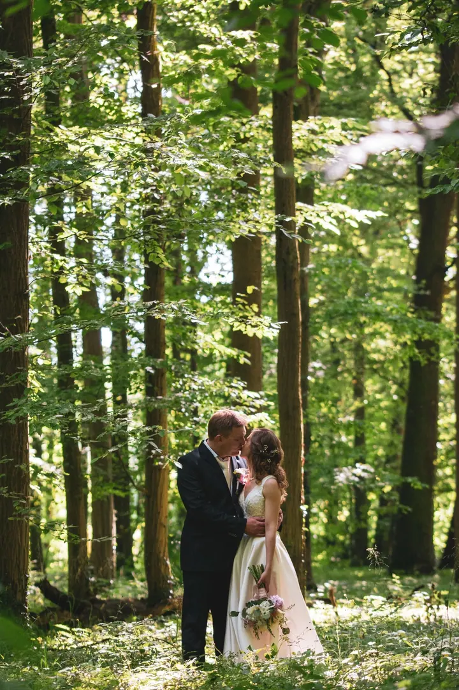

Svatební den
Fotím celý den od přípravy nevěsty a ženicha až po večerní zábavu. Součástí je předsvatební schůzka, předsvatební focení a fotokoutek s instaxem.

Jmenuji se Roman Pospíšilík a na Holešovsku fotím svatby, těhotenství i rodiny s nejmenšími dětmi. Přes den pracuju jako programátor a focení je pro mě radost i odpočine…
Rezervovat termínAhoj, jsem Roman a žiju v malé obci Kostelec u Holešova. Živím se jako programátor a fotografování mám jako koníček, při kterém si odpočinu od všedních dní. Fotím hlavně svatby, ale také rodiny, těhotenství a miminka, k tomu portréty a glamour.


Na focení mi záleží, abyste se cítili příjemně a přirozeně. Ať jde o svatbu nebo o focení u vás doma, přizpůsobím se prostředí a nechám vás být sami sebou. Proto často fotím doma, kde to znáte a kde je klidnější i miminko.
Na tom, co dělám, mám nejradši, když mě rodina pozve znovu. S některými páry jsem začal předsvatebním focením a pak fotil jejich svatbu, těhotenství i první dny miminka.
Co fotím
Fotím celý den od přípravy nevěsty a ženicha až po večerní zábavu. Součástí je předsvatební schůzka, předsvatební focení a fotokoutek s instaxem.
Chcete mít krásné fotky s manželem nebo přítelem, sami nebo i s dětmi? Fotíme u vás doma nebo v přírodě, zhruba hodinu až dvě.
Těhotenství je nádherné období a zaslouží si fotky, ke kterým se budete vracet. Těhotenské šaty vám rád půjčím, můžete mít ale i vlastní.
Miminko fotím u vás doma, v prostředí, které dobře znáte. Vy se cítíte dobře, a tak je klidnější i vaše dítě.
Postup
Sejdeme se a projdeme spolu plán dne, místa a vaše přání. Zjistíme, co je pro vás důležité.
Vyfotíme se ještě před svatbou, abyste si na foťák zvykli a navzájem jsme se poznali. Ve svatební den už pak budete v klidu.
Fotím od přípravy nevěsty a ženicha až po večerní zábavu. Na večer přivezu fotokoutek s instaxem.
Všechny povedené fotky dostanete na USB disku v dárkové kazetě spolu s 20 tištěnými fotkami. K tomu online galerii, ať je můžete snadno poslat rodině a přátelům.
Otázky
Celodenní focení svatby stojí 16 000 Kč s DPH. V ceně je předsvatební schůzka, předsvatební focení, focení od přípravy po večerní zábavu, dárková kazeta s USB a 20 tištěnými fotkami a online galerie.
U vás doma nebo v přírodě, podle toho, co je vám bližší. Focení trvá hodinu až dvě a stojí 1 500 Kč s DPH.
Nemusíte, těhotenské šaty vám v rámci balíčku půjčím. Pokud máte vlastní, klidně je vezměte. Těhotenské focení stojí 1 700 Kč s DPH.
Miminko fotím u vás doma, kde je vám i jemu nejlíp. Dostanete všechny povedené fotky digitálně a na USB v dárkové kazetě spolu s 10 tištěnými fotkami.